1. Свято-Троицкая церковь села Становского
Каменный однопрестольный храм во имя Святой Живоначальной Троицы возведён тщанием прихожан в период с 1826 по 1831 годы взамен обветшавшей деревянной церкви. Храм построен в благородном стиле провинциального классицизма: монументальный четверик с полукруглой апсидой, перекрытый пологим купольным сводом с цилиндрическим барабаном, к которому примыкали трапезная и высокая колокольня.
Именно этот храм являлся духовным домом для всех четырёх родовых линий:
- Стрункины и Таракановы: деревня Речная (Рычная) в 10 верстах от церкви.
- Савины / Савиных: деревня Сетова в 5 верстах от церкви.
- Дудины: деревня Дудина (Чертова) в 7 верстах от церкви.
- Становское: волостной центр, место жительства священнослужителей и родственных семей Кошкаровых, Гомзяковых и Слинкиных.
Ключевые события предков в Свято-Троицком храме:
- 28.01.1900: Крещение дедушки Василия Меркурьевича Стрункина священником о. Александром Серебренниковым (МК 1900, л. 111, зап. 16 м.).
- 19.02.1899: Венчание Феодота Меркурьевича Стрункина с Евдокией Тимофеевной Кучумовой; поручитель — старший писарь Тихон Филиппович Стрункин (МК 1899, л. 628, брак № 50).
- 06.02.1911: Венчание ефрейтора Игнатия Меркурьевича Стрункина с солдатской дочерью Марией Шубиной (МК 1911, л. 233, брак № 14).
- 24.01.1854: Венчание родоначальника Тимофея Ефремовича Назарова (Тараканова) с Александрой Семеновой (МК 1854, л. 62 об., брак № 19).
- 15.01.1914: Венчание сестры прабабушки — Марии Ивановны Савиных (17 лет) с Димитрием Бабушкиным (МК 1914, л. 352, брак № 5).
- 31.01.1914: Прадед Ефим Меркурьевич Тараканов лично записан поручителем по жениху на венчании (МК 1914, л. 358, брак № 32).
- 01.08.1857: Крещение Евдокии Петровны Савиных у крестьянина д. Сетовой Петра Григорьева Савиных (МК 1857, л. 37, зап. 96).
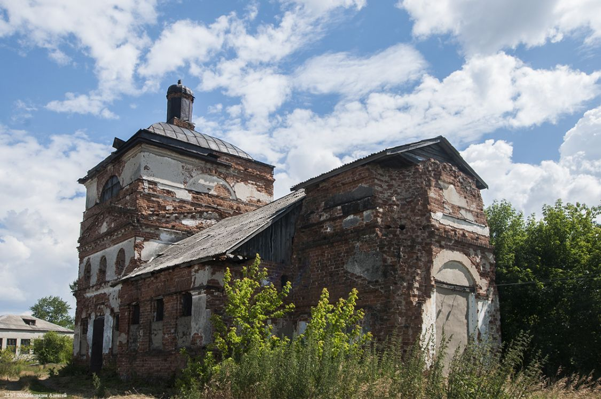
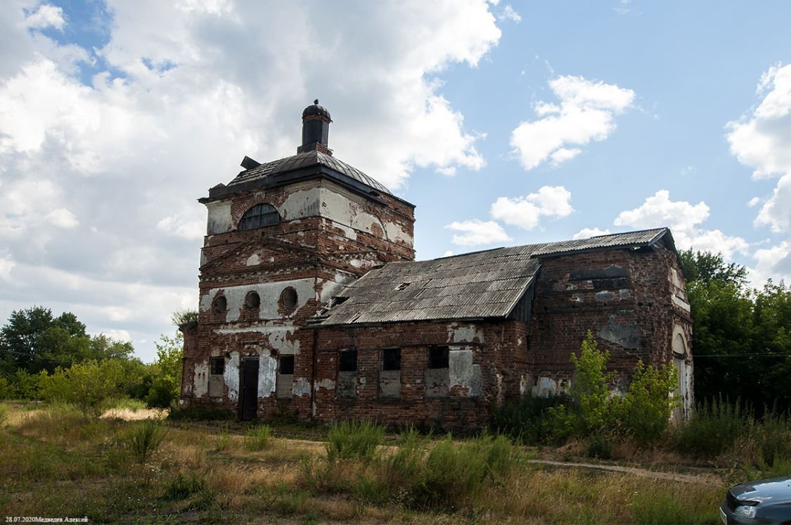
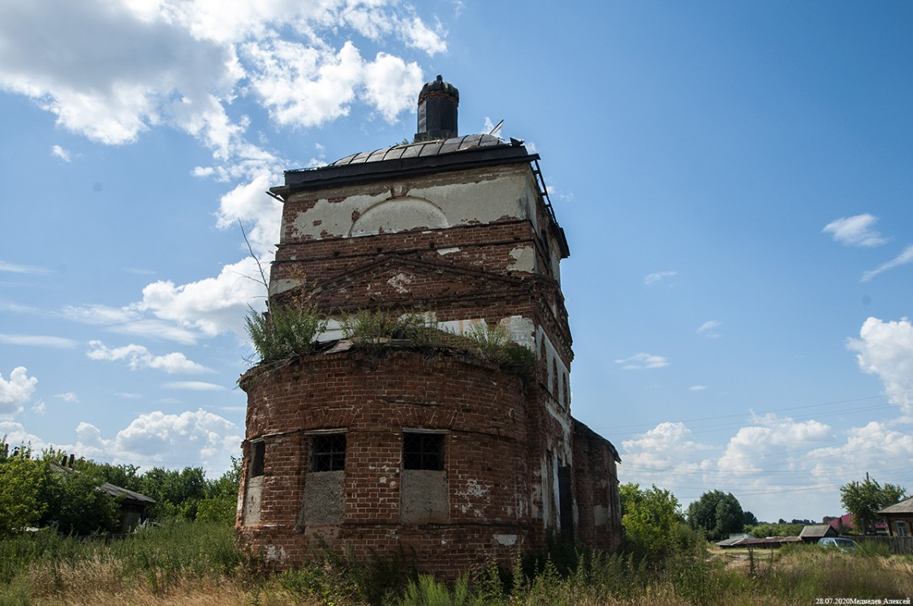
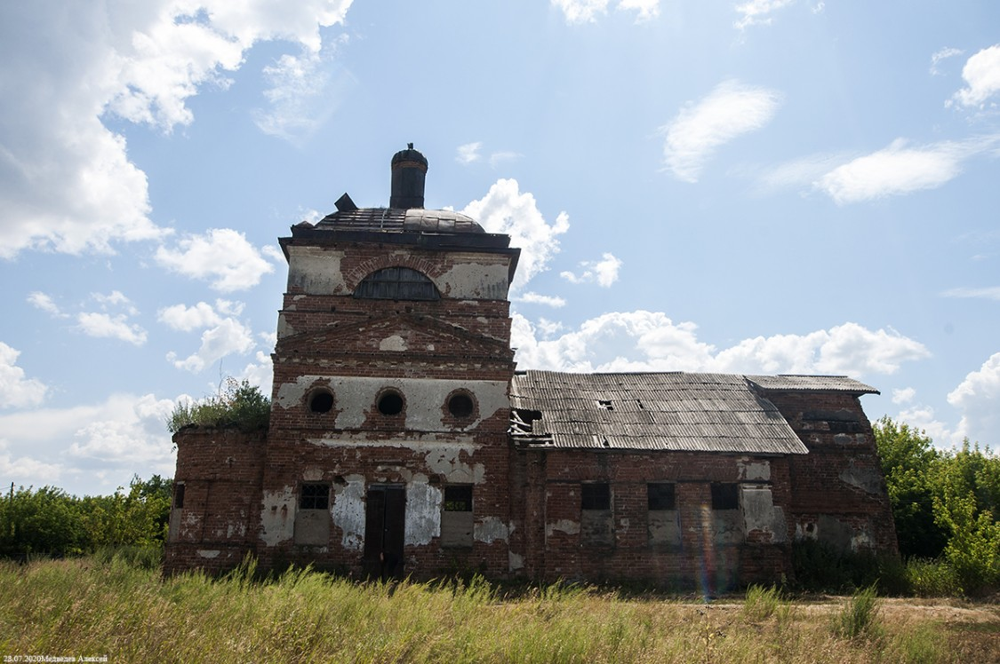
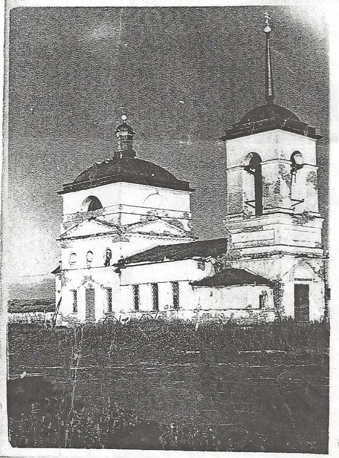
2. Михайло-Архангельская церковь села Долговского
Село Долговское на реке Куртамыш — старейший административный и духовный центр края. Деревянная церковь Архистратига Михаила была заложена в 1754 году и освящена 8 ноября 1759 года. На протяжении почти столетия именно к причту Архангельской церкви относилась деревня **Рычная (Речная)**, а также деревни Сорокина, Пепелина, Березова, Косулина и Щучья.
В метрических книгах Архангельской церкви за 1837 год (ОГАЧО, Ф. И-226, Оп. 1, Д. 47) и 1839 год (Дело 64) служили старейшие священники Симеон Васильев Протасов и Иоанн Николаев Милицын, дьячок Стефан Шемотян и пономарь Михаил Трешин.
18 февраля 1877 года старинный деревянный храм полностью сгорел во время пожара (о чём зафиксировано в документах епархии и в комментариях каталога Sobory.ru). Позднее прихожане отстроили каменный храм, разрушенный в 1930-е годы.
События рода Стрункиных в Долговском приходе:
- 23.08.1839: В деревне Рытной от поноса скончалась 6-месячная Евсевия, дочь крестьянина Власа Тихоновича Стрункина; отпета и погребена причтом с. Долговского (МК 1839, л. 860, запись № 95 м.).
- 1837–1839 гг.: Браки и рождения соседей Стрункиных по деревне Речной — семей Перелазовых, Древниных, Ворониных, Аникиных и Дружининых.
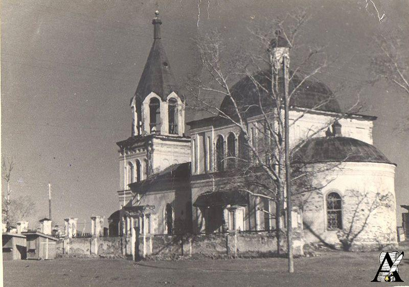
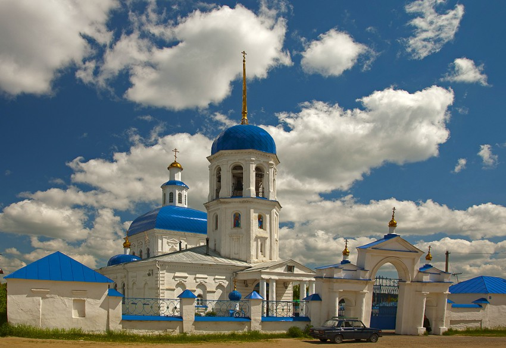
3. Соседние приходы и памятные места рода
Покровская церковь с. Половинного
Церковь Покрова Пресвятой Богородицы соседнего села Половинного. В этот приход входили деревня Половинная и хутора, откуда происходили невесты и восприемники Стрункиных и Таракановых.
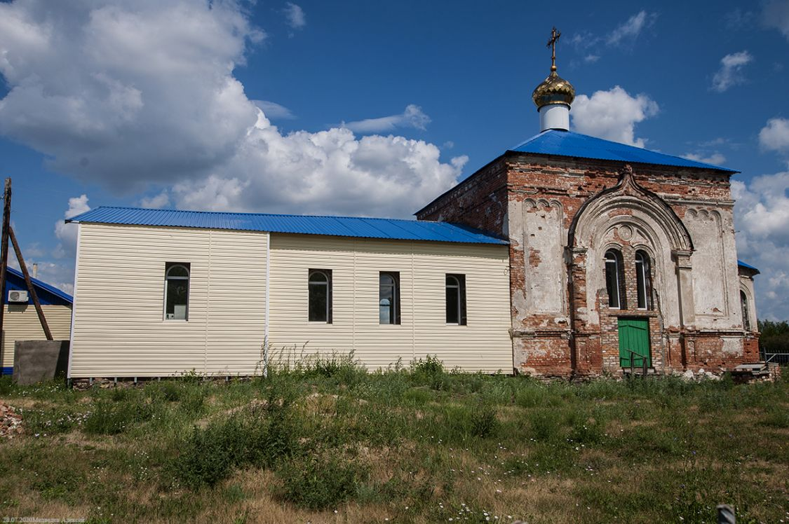
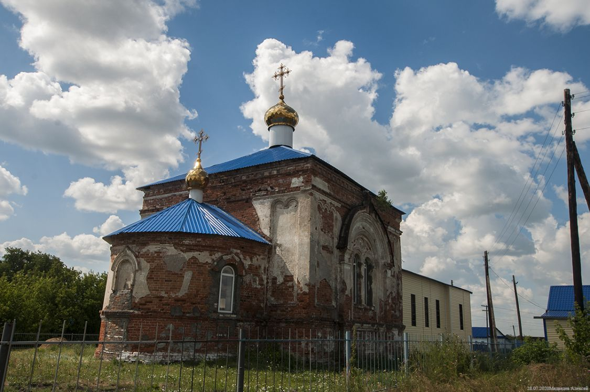
Часовня в деревне Чёртово
Деревня Чёртово — родина династии Кашкаровых. В 1871 г. дочь Филиппа Стрункина Неонилла вышла замуж за Илью Васильевича Кошкарова. Часовня-памятник увековечивает память старейших жителей волости.
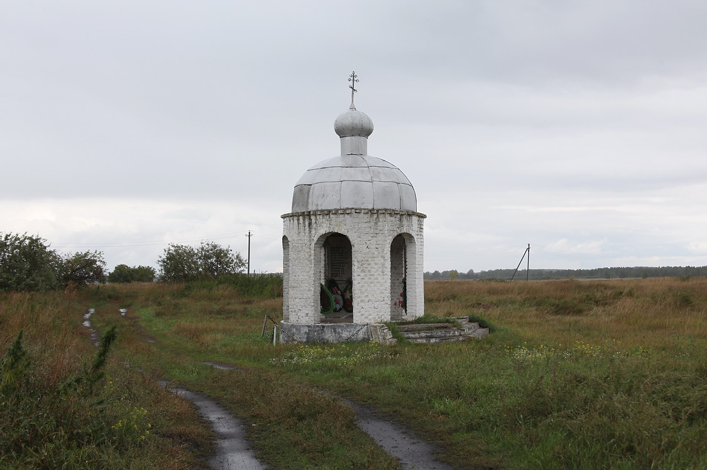
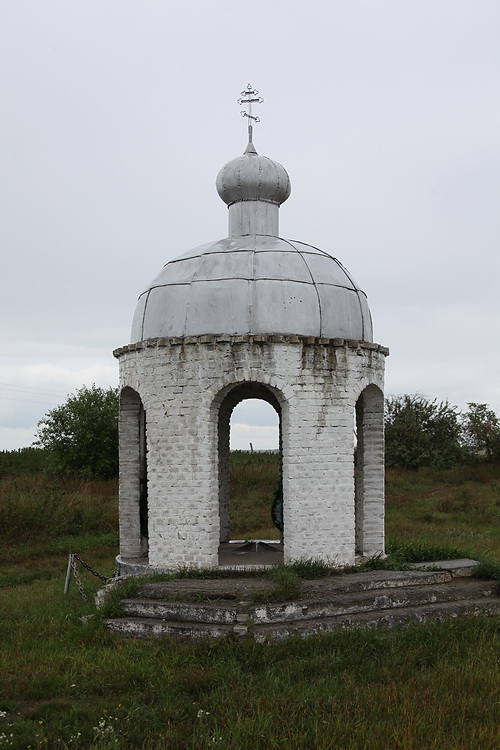
4. Сводная карта приходской принадлежности деревень рода
| Деревня / Село | Семья | Период XVIII в. – 1845 г. | Период 1846 – 1917 гг. | Фонды в архивах |
|---|---|---|---|---|
| д. Речная (Рычная / Рытная) | Стрункины, Таракановы | Михайло-Архангельская с. Долговского | Свято-Троицкая с. Становского | ОГАЧО (Ф. И-226, Оп. 1), ГАКО |
| д. Сетова (Сетовское) | Савиных, Шумиловы | Свято-Троицкая с. Становского (ранее дерев. храм) | Свято-Троицкая с. Становского | ОГАЧО (Ф. И-226), ОГАОО (Ф. 173) |
| д. Дудина (Чертова) | Дудины, Бабиковы | Свято-Троицкая с. Становского | Свято-Троицкая с. Становского / Покровская с. Половинного | ОГАЧО (Ф. И-226, И-87) |
| с. Становское (Становое) | Кошкаровы, Гомзяковы | Свято-Троицкая с. Становского | Свято-Троицкая с. Становского | ОГАЧО (Ф. И-226, Оп. 1) |
| д. Половинная | Белоноговы, Хрящевы | Михайло-Архангельская с. Долговского | Покровская с. Половинного | ОГАЧО (Ф. И-226), ГАКО |